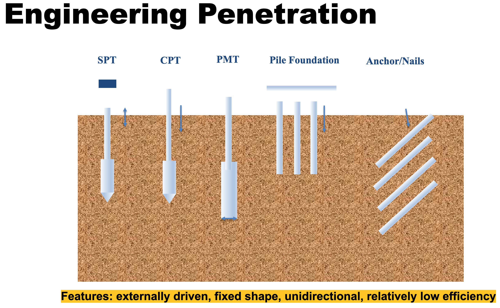

Self-burrowing Mechanisms and Robotics
We study how living things burrow. Inspired by the biological burrowing mechanisms, we develop robots and tools for autonomous underground exploration and monitoring.
Background
Species such as earthworms and bivalve mollusks possess extraordinary burrowing efficiency compared to most man-made penetrometers. These organisms move by themselves, actively sense their environment and adaptively change burrowing directions. All these features are desirable for autonomous geotechnical exploration tools. The envisioned robots and probes would be energy efficient and improve productivity.
Impacts
Underground sensing networks enabled by these bio-inspired burrowing robots can help monitor the safety of infrastructure and the environment. Small, agile underground robots can be used not only for traditional geotechnical engineering site characterization, but also in regions that are normally difficult to reach due to energy and environmental restrictions, such as sites that are damaged due to natural and man-made hazards (e.g., earthquakes, landslides, flooding, collapsed structures), in extreme environments (e.g., arctic and seafloor environments) and in extra-terrestrial settings (e.g., lunar and Mars exploration).
In addition, the new knowledge and techniques obtained in this research can be used to develop a mechanistic understanding of animal–sediment interactions and shed light on the ecology and evolution of burrowing organisms. The research will also serve as a platform to promote learning, teaching and training; the interdisciplinary and bio-inspired nature of the proposed research is an ideal outreach topic to generate enthusiasm in K-12 students and the public about STEM education and research.



What governs underground locomotion?
It’s a daunting but fascinating question. Similar to locomotion in air, water and on the ground, thrust must be generated high enough to overcome the resistance in order to move in a granular material such as soil. The uniqueness of the soil materials lays in its opacity and complex mechanical behavior: it exhibits different states which can be more solid like, more fluid (even gas) like, or anywhere in between; furthermore, materials and stress states vary significantly in space. These properties make it challenging to study the mechanisms: first, one cannot see through soil easily to capture the kinematics; second, one cannot capture the dynamics due to the ever-changing material properties and soil-body interactions. While we don’t have a universal law (explanation) for underground locomotion yet, nature provides us a diverse “catalog” on possible ways how burrowing can be done. After examining a great many burrowing organisms, it’s clear to us that while they adopt different tricks to make burrowing effective and efficient, they do share some commonness: they work “with” soil instead of ” against” soil. It seems like they do know the complex soil behaviors and they always try to agitate soil in a way so they can leverage the changing properties for movement.
Unveil the interplay between shell opening and foot penetration
Shell opening reliefs the stresses at the foot tip and enhances the anchorage force. Check out the DEM simulation (Sichuan Huang and Tao 2017, 2018, 2020) and the photoelastic visualizations (S. Huang, Mahabadi, and Tao 2020; Scihuan Huang, Mahabadi, and Tao 2022).
Decipher the role of rotation on penetration
We are also exploring how seed awns bury themselves and how rotation would facilitate penetration (Tang and Tao 2021).
How razor clam burrow out of the ground?
In this study, we look at a particular burrowing scenario: upward burrowing. It is a less studied topic but it is interesting to ask how a buried clam resurface. Do they actively burrow out of the ground, or just like mole crab which waits for the coming wave to sweep it out? Also, if they do actively burrow, do they gradually turn, sharply turn around, or go directly backward? If they go backward, do they use the same trick for downward burrowing? To find out, we observed two adult razor clams collected in a sandbar in Rhode Island (thanks to Prof. Dale Levitte for the help!).
It turned out razor clams burrowing backward when they need to emerge. And they do it so effortlessly, using a much simpler “gait” than downward burrowing. A closer look and analysis reveals that the razor clams leverage two inherent properties of sands: the vertical in-situ stress gradient and the flowing nature of sands upon yielding. It is interesting to think it in another way: the razor clams defy its own gravity (upward movement) by take advantage of gravity itself (the reason for soil stress gradient and downward flowing of sands to fill any cavity below)!
Let’s mimic razor clam and make a Self-burrowing-out Robot (SBOR)
The upward burrowing gait of razor clams is basically a combination of axial extension and contraction. There are many ways to achieve these motions. One way is to use an soft artificial muscle, which works similarly with the powerful foot of a razor clam. The idea is simple, you make an elastic tube, wrap inextensible fibers onto its surface in a certain way to constrain the motion into the axial direction, you then inflate and deflate it using air or water. We did that and it worked. The robot naturally burrows out of the ground, just like the razor clams.
Leverage the anisotropic surface characteristics
Check out how anisotropic surfaces (Sichuan Huang et al. 2020) would affect the burrowing-out behavior of the SBOR.
An Explanation with a Geotechnical Flavor
We molded the upward burrowing process based on Newton’s laws of motion, together elasticity and geotechnical concepts: in-situ stress states, pullout resistance, interface friction. To solve the problem analytically, we made a series of assumptions and simplifications based on observations. Nevertheless, we are satisfied with the outcome. From the models, it is clear that “clamming up” is a natural result of 1DOF vertical motion and sand behaviors.
For more information, please refer to our paper (Tao, Huang, and Tang 2019) published in Journal of Geotechnical and Geoenvironmental Engineering, as well as (Tao, Huang, and Tang 2020) published in Bioinspiration and Biomimetics.
Acknowledgement
This material is based upon work supported by the National Science Foundation (NSF) under NSF CMMI 1849674 and CMMI 1841574. Any opinions, findings, and conclusions or recommendations expressed in this material are those of the authors and do not necessarily reflect those of the NSF. We also would like to thank the anonymous reviewers whose constructive comments helped us improve the overall quality of the paper.